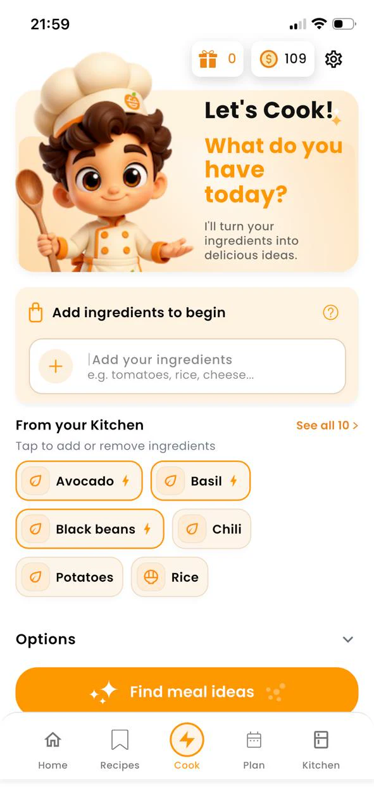

Roast chicken
Tortilla wraps, chicken noodle soup, fried rice, or a grain bowl with greens and dressing.
Leftovers

Leftovers are not a failure of meal planning. They are ingredients with a head start. The trick is transforming them so dinner does not feel like a rerun: change the format, add a fresh flavor, and introduce one contrasting texture.
A leftover recipe generator: whether that is a method on paper or an app like Delixio, starts from cooked food you already have and suggests a second life for it.
Tortilla wraps, chicken noodle soup, fried rice, or a grain bowl with greens and dressing.
Fried rice, stuffed peppers, rice soup, or breakfast rice with egg.
Frittata, pasta toss, flatbread topping, or blended soup with stock.
Tacos, stews, salads, or mash on toast with olive oil and herbs.
Pasta frittata, soup add-in, or a cold pasta salad with vinaigrette and crunchy vegetables.
Sometimes leftovers only need one missing item to become a complete meal: tortillas, stock, eggs, or a fresh vegetable. That is a good moment for Flexible thinking: use what you have, allow a small addition, and avoid buying a full new grocery list.
Type leftover ingredients into Delixio the same way you enter fresh ones. Choose preferences and a cooking mode, then generate free personalized ideas. Unlock a full recipe when you want the complete steps (1 credit, with 1 free full recipe per day).
Save remixes that work into Favorites or a custom list so next week’s leftovers are easier.
Delixio is currently available for iPhone and Android. Type the ingredients you already have, explore free recipe ideas, then unlock a full recipe when you want to cook. You get 1 free full recipe every day, plus optional credit packs. No subscription.
Yes. Enter leftover ingredients and Delixio can suggest practical meal ideas that use them. Unlock a full recipe when you are ready to cook.
Change the format and add a fresh contrast: acid, herbs, crunch, or a new sauce.
Often yes, because the main cooking is partly done. Still choose a format that matches your energy.
Yes. A small flavor list is often what turns leftovers into a new dish.